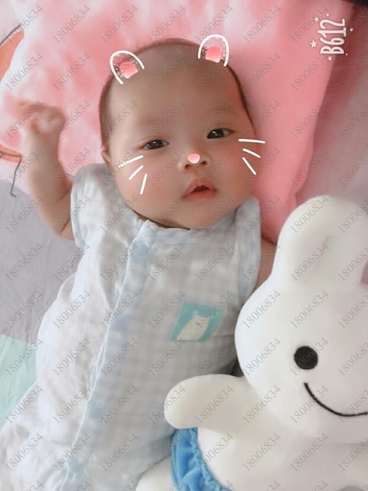
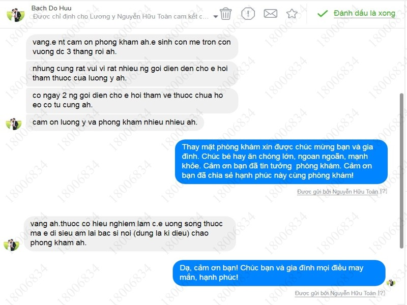
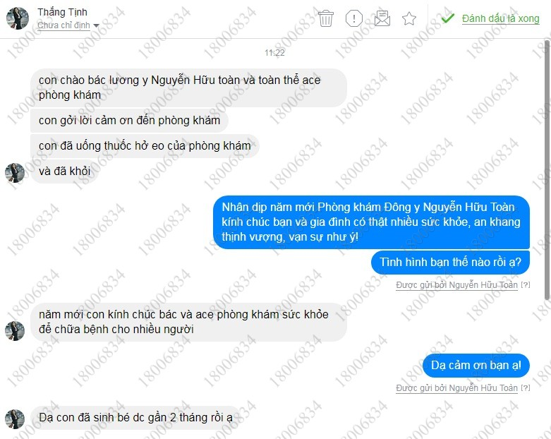
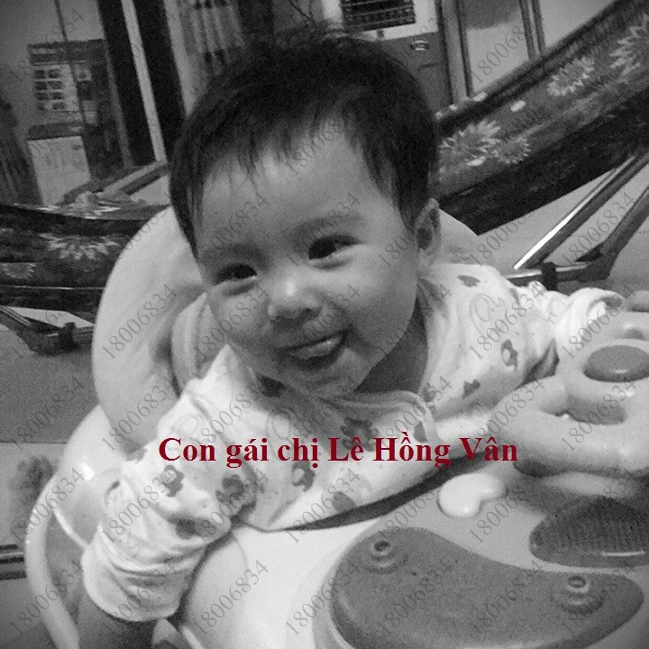
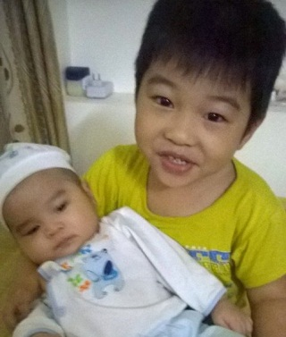

Kết quả điều trị hở eo tử cung tại Phòng khám Đông y Nguyễn Hữu Toàn
Chị Lương Thị Vĩnh Mỹ ở xã Mỹ Hòa, Thị Xã Bình Minh, tỉnh Vĩnh Long từng 2 lần sảy thai vì hở eo tử cung, lần thứ 3 mang thai lại có nguy cơ mất con vì hở eo tử cung, cổ tử cung ngắn, nhưng hạnh phúc đã đến với chị khi chị biết đến thuốc HỞ EO HOÀN của Phòng khám Đông y Nguyễn Hữu Toàn
Chia sẻ của chị Vĩnh Mỹ: "Đây là bé nhà mình lúc 20 ngày và hiện tại ạ. Hiện bé được 2 tháng 23 ngày! Hành trình tìm con khá gian nan vất vả , tốn không ít nước mắt, sức khỏe , thời gian, vật chất.. Cũng nhờ thuốc của Lương Y Nguyễn Hữu Toàn mà mẹ con mình đã gặp nhau duyên phận không bị xa cách nữa😊. Trong suốt thai kì mình đã theo chỉ dẫn của Bác Sĩ Tây Y và sự hỗ trợ của Đông Y bên bạn. Mình thuốc tuýp người rất khó mang. Vì vậy đã sảy thai 2 lần. Mỗi lần đều 4 5 tháng. Biết đến thuốc từ tuần 12 cũng là lúc mình đang nằm viện điều trị dọa sẩy hở tử cung máu tụ bóc tách 15%. Tìm hiểu và không ngần ngại chồng mình đã đặt thuốc về cho mình thử liệu trình đầu tiên. Ban đầu rất hoang man vì sử dụng thấy có hiện tượng ra huyết đen nhưng sau đó mình khám sau liệu trình thì tử cung không hở cổ tử cung cao. Đến 4 5 tháng mình lại hở cổ tử cung tử cung ngắn lại rỉ ối và bắt đầu dọa sảy. Mình tiếp tục đặt thuốc để uống cùng Tây Y kết hợp điều trị. Lần đấy thập tử nhất sinh. Bác sĩ đã nói mình chuẩn bị tâm lí để mổ bắt thai và cơ hội sống sót của bé nếu được ấp lồng rất là thấp. Mình khóc rất nhiều tự an ủi cố gắn và trông chờ vào phép thần kì từ thuốc bên bạn. Bạn biết không điều thần kì đã xảy ra mình đã khỏi hoàn toàn và được cho về nhà nằm dưỡng. Sau lần sống còn đấy mình đã tin điều kì diệu là có thật!! Nhưng Mẹ Con mình không được yên ổn. Đến gần 6 7 tháng mình lại một lần nữa hở cổ tử cung , cổ tử cung ngắn trầm trọng dọa sảy thai to. Vẫn chỉ biết khóc. Nhưng! Mình! Một lần nữa tin ở bạn. Tiếp tục đồng hành cùng bạn cùng Bác Sĩ cùng Tây y điều trị cho mình. Mọi thứ cứ diễn ra như vậy. Dùng hết liệu trình thứ 3 này cổ tử cung vẫn ngắn vẫn hở nhưng niềm hy vọng lại cao hơn. Bác sĩ an ủi mình rằng với cổ tử cung này mình cố gắn đến 33 34 tuần thì cơ hội sống của con mình sẽ cao. Mình tin tưởng ở Con ở Bác sĩ ở Đông y. Ở Ông Trời. Nhất định có lòng có tâm có thành ý thì mọi chuyện sẽ tốt đẹp thôi! Vì sau nhiều giang nan thử thách vượt bao hiểm nghèo mình và Con vẫn bình an! Và thật bất ngờ mình kiêng trì đến tuần 35! Bé vẫn mạnh khỏe nằm trong bụng mình. Nhưng số trời đã định. 35 tuần 5 ngày mình rỉ ối lại tử cung mở cổ tử cung tiếp tục ngắn hơn. Mình liền kêu cứu thuốc đông y mong có phép màu lần nữa cứu vớt mẹ Con mình. Tử cung mở 2 phân chỉ còn 8 phân nữa sẽ sanh. Nhưng kéo dài suốt 2 3 ngày bụng mình có dấu hiệu nhưng vẫn chưa sanh. Mình ngưng uống phần thuốc còn lại. Vì mong có thể kéo dài càng lâu càng tốt để nuôi bé trong bụng nhưng do rỉ ối vài ngày nên bắt buộc mình phải sanh ngay vì nguy hiểm đến sự an toàn của bé! Và bé đã trào đời sớm 1 tháng với 36 tuần 6 ngày. Nhưng trộm vía rất kháu khỉnh và cứng cáp! Vỡ òa trong sự hạnh phúc này! Vượt bao hiểm nguy với nhiều khung bật cảm xúc. Mình và Gia Đình rất biết ơn Lương Y cùng Bác Sĩ đã chăm sóc giúp đỡ . Làm nên một kì tích đó chính là Bé Alex. Con trai mình ngày hôm nay!!! Chúc tất cả mọi người và phòng khám sẽ gặt được thêm nhiều thành công mới tạo nên nhiều giá trị mới mang tiếng cười và hạnh phúc đến cho mọi nhà!!! 💗💗💗"
Đầu tiên xin được chia sẻ với các bạn bức thư của anh Sơn là chồng của chị Xuân Linh. Bệnh nhân Thân Thị Xuân Linh. Địa chỉ: 10/1 Nguyễn Hữu Tiến, Phường Tây Thạnh Quận Tân Phú TP HCM

Email: Vuson2007@gmail.com “Kính gửi Lương y Nguyễn Hữu Toàn. Trước tiên vợ chồng tôi xin gửi lời cảm ơn đến Lương y và phòng khám đã chữa khỏi bệnh "hở eo cổ tử cung"cho vợ tôi. Vợ chồng tôi cưới nhau từ năm 2009, do điều kiện kinh tế nên hai vợ chồng kế hoạch, đến 2012 dự định có em bé. Lần đầu mang thai chưa có kinh nghiệm và cũng chưa biết mình bị hở eo, nên vợ tôi vẫn đi làm và sinh hoạt bình thường (không kiêng cữ gì hết). Trong thời gian mang thai Vợ tôi đi khám định kỳ ở bệnh viện nhưng không phát hiện dấu hiệu bất thường nào. Đến tháng thứ tư thì bị sảy thai. Tiếp tục đến năm 2013, Vợ tôi có thai lần thứ 2. Lần này vợ chồng tôi có cho Bác sỹ biết đã bị sảy thai lần trước. Đến tháng thứ 4 Bác sỹ cho vợ tôi đi kiểm tra bằng siêu âm và kết quả là vợ tôi bị "hở eo cổ tử cung". Bác sỹ chỉ định khâu eo.
Khâu xong khoảng 2 tuần sau thì vợ tôi bị gò phải nhập viện. Kết quả là vẫn không giữ được thai phải cho sinh non. Lần này thì vợ chồng tôi thật sự buồn và càng buồn hơn khi tôi được bác sỹ tư vấn bệnh này tây y can thiệp bằng phương pháp "Khâu eo" là duy nhất. Nhưng có trường hợp khi khâu xong rồi vẫn không giữ được thai do không thích hợp với chỉ khâu. Khi đó tôi tự an ủi mình là "còn nước còn tát". Và tôi lên mạng tìm hiểu về bệnh này, tình cờ tôi vào trang Web "thaythuoccuaban" thì được biết Lương y Nguyễn Hữu Toàn đã chữa khỏi bệnh này cho nhiều người. Tôi điện thoại cho phòng khám và được tư vấn là bệnh này chỉ cần uống 1 liều duy nhất trong 3 ngày vào đầu tháng thứ tư của thai kỳ. Đến gần tháng thứ tư tôi đưa vợ đi khám thì Bác sỹ chỉ định 2 tuần sau sẽ tiến hành khâu eo. Tôi điện thoại cho phòng khám của Lương y và đặt thuốc. Vợ tôi uống thuốc trong 3 ngày và sau đó đi kiểm tra lại trước khi khâu eo theo chỉ định của Bác sỹ. Tôi được Bác sỹ thông báo là vợ tôi không bị hở eo và không cần phải khâu eo nữa. Thật bất ngờ. Vợ chồng tôi vui mừng và hạnh phúc biết bao. Đến ngày sinh vợ tôi không có dấu hiệu gì, Bác sỹ chỉ định phải nhập viện gấp và cho sinh mổ. Tôi rất lo lắng không biết chuyện gì sẽ xảy ra, phải đến khi màn hình thông báo vợ tôi sinh được bé gái nặng 3.4kg lúc đó tôi mới hết lo lắng. Đến nay cháu đã được 16 tháng rất khỏe mạnh và lanh lợi. Một lần nữa gia đình tôi xin chân thành cảm ơn Lương y và phòng khám đã chữa khỏi bệnh "hở eo cổ tử cung" cho vợ tôi.”
Cổ tử cung ngắn, hở eo tử cung trong khi tây y không còn cách nào khác thì uống thuốc của Phòng khám Đôngy Nguyễn Hữu Toàn lại có hiệu quả. Hồ Thị Thanh Hoài 1989. Địa chỉ: số 28 Ngô Đức Kế, Tp.Vinh, Nghệ An.
Tháng 4 năm 2017 chị Hoài khi đang mang thai ở tuần thứ 26, thấy có dấu hiệu bất thường nên đi khám thì phát hiện bị hở eo tử cung kích thước 9mm, kèm theo cổ tử cung ngắn. Do thai ở tuần tuổi lớn nên không thể tiến hành khâu eo, bác sĩ tây y chỉ định chị phải nằm bất động trên giường theo dõi vì không còn phương pháp nào khác.

Chị Hoài tìm hiểu trên mạng và biết đến Phòng khám Đông y Nguyễn Hữu Toàn (482, lô 22C, Lê Hồng Phong, Ngô Quyền, Hải Phòng) có bài thuốc gia truyền đặc trị hở eo tử cung, tỷ lệ thành công trên 95% chỉ sau 3 ngày thuốc. Chị Hoài có nhờ người nhà tới phòng khám lấy thuốc điều trị.
Sau khi dùng 1 liều hở eo và 3 ngày thuốc, chị thấy dễ chịu, không gò bụng, nặng bụng. Sau đó tuần 30 chị có đi siêu âm lại thì không còn hở eo nữa.
Hiện tại chị mang bầu được 37 tuần, sức khỏe 2 mẹ con đều tốt và đang chờ tới ngày sinh con.
Tiền sử 2 lần mất con vì hở eo tử cung- Lần mang thai thứ 3 may biết tới thuốc của Lương y Nguyễn Hữu Toàn đã mẹ tròn con vuông. Chúc mừng chị Nguyễn Thị Giang 1979. Địa chỉ: Số nhà 59 Nguyễn Huệ, khu phố 3 phường 1 TP Đông Hà tỉnh Quảng Trị

Chị Giang có tiền sử sảy thai 2 lần, 1 lần khi thai được gần 5 tháng. Cách đây 1 năm chị lại bị sảy thai lần thứ 2. Hiện tại chị đang mang thai lần 3, thai được 3 tháng, lúc 2 tháng có dấu hiệu thai bóc tách 30%. Hiện tại hở eo tử cung, thỉnh thoảng ra dịch hồng, có gò bụng. Ăn kém, ngủ kém, táo bón nhiều.
Chị Giang được người nhà giới thiệu đến phòng khám bắt mạch lấy thuốc điều trị. Chị Giang uống 1 liệu trình 3 ngày thuốc hở eo và 20 thang thuốc bổ an thai. Tháng 3/2016 chị đi kiểm tra kết quả thai được 22 tuần, cổ tử cung dài ra 36mm, nhau thai bám thấp, nhau tiền đạo thể nhẹ. Chị Giang lấy thêm 1 liều hở eo để điều trị. Tháng 7/2016 phòng khám liên lạc với chị Giang, chị thông báo hiện tại sức khỏe của chị ổn định. Trên đây là một số trường hợp bệnh nhân hở eo tử cung đã điều trị tại phòng khám. Hy vọng với những chia sẻ này sẽ giúp bạn lựa chọn được phương pháp điều trị hở eo an toàn và hiệu quả nhất.
Từng mất con 2 lần vì hở eo tử cung - Chúc mừng chị Hoàng Thị Thanh Hoa 1994 – Địa chỉ: Đồng Lạc, Đức Thọ, Hà Tĩnh đã được làm mẹ nhờ thuốc của Phòng khám Nguyễn Hữu Toàn
Tháng 7/2018 chị Hoa có gọi điện cho Phòng khám Đông y Nguyễn Hữu Toàn (18006834) để được tư vấn và lấy thuốc điều trị hở eo tử cung. Chị Hoa cho biết, chị đã từng 2 lần có thai, nhưng cả hai lần mang thai chị đều không giữ được con vì bị hở eo tử cung. Lần thứ 3 mang thai, chị rất lo lắng, và sợ. Nỗi sợ mất con như 2 lần trước luôn thường trực trong chị. Khi thai được 10 tuần chị đi khám, bác sĩ chỉ định chị 12 tuần phải khâu eo. Chị từ Hà Tĩnh ra viện sản Trung Ương để khâu eo, nhưng do âm đạo bị viêm nên không thể khâu được.
Chị Hoa được biết phòng khám Đông y Nguyễn Hữu Toàn có bài thuốc gia truyền chữa hở eo, nên chị có gọi điện đến phòng khám để được tư vấn và đặt thuốc. Chị Hoa dùng tất cả 4 liều thuốc hở eo của phòng khám, hiện tại chị đã sinh bé nặng 2.8kg. Bé sinh ra khi được 38 tuần 5 ngày.
Phòng khám Đông y Nguyễn Hữu Toàn xin được chia sẻ niềm vui cùng với chị Võ Hạ Uyên - Địa chỉ: Sơn Trà, Đà Nẵng đã sinh mẹ con vuông.
Chị Uyên có gửi tin nhắn cho phòng khám #PKĐYNHT “Hôm trước chị thấy số gọi nhỡ từ nhà thuốc. Mà ngày ấy chị đi sinh em bé. Chị sinh ở tuần 37, em nặng 2.4kg, trộm vía em nhẹ cân nhưng đều ổn. Cảm ơn em và phòng thuốc rất nhiều, nhờ có thuốc mà chị giữ được bé đến tuần 37 và mọi việc bình an.”
Trích bệnh án của chị Uyên: Tháng 8/2022 chị Uyên có liên hệ với phòng khám, lúc đó chị đang mang bầu ở tuần 25, đã phải nhập viện điều trị từ khi 22 tuần do cổ tử cung ngắn, hở eo tử cung, lúc vào viện cố tử cung dài 6mm.
Sau khi dùng 2 liệu trình hở eo tử cung, tình trạng của chị Uyên đã ổn hơn. Nhưng bác sĩ tây y vẫn nói có nguy cơ cao sinh non và yêu cầu tiêm trưởng thành phổi.
Chị Uyên tiếp tục uống thêm 1 liều hở eo tử cung nữa, kiểm tra cổ tử cung đã dài thêm được 2mm, cả gia đình chị ai cùng vui mừng. Lúc này thai đã được 29 tuần.
Được sự tư vấn của #PKĐYNHT chị Uyên tiếp tục phải sử dụng thuốc Hở eo hoàn do cơ tử cung của chị rất yếu, lại lớn tuổi.
Đến tuần thứ 33 cổ tử cung vẫn tạm ổn. Nhưng có hiện tượng thiếu ối. Phòng khám Đông y Nguyễn Hữu Toàn lại tiếp tục cắt cho chị 1 liệu trình 10 thang thuốc sắc giúp bổ an thai, bổ khí, tăng cường ối cho bệnh nhân.
Và hai mẹ con chị Uyên đã bình an cùng nhau vượt qua hành trình đầy thử thách này ở tuần thai thứ 37.
Lưu ý: Tùy cơ địa mỗi người mà hiệu quả điều trị của thuốc sẽ khác nhau.
TÔI MUỐN ĐƯỢC TƯ VẤN

Cổ tử cung ngắn, dọa sảy thai - Uống thuốc của Phòng khám Nguyễn Hữu Toàn đã mẹ tròn con vuông - Chúc mừng chị Lê Hồng Vân 1988 – Địa chỉ: D20/ 28 T đường Võ Văn Vân, ấp 4, xã Vĩnh Lộc B, huyện Bình Chánh, TP Hồ Chí Minh.
Thang 6 năm 2018 chị Vân khi đang mang thai ở tuần thứ 15 thì phát hiện cổ tử cung ngắn, chiều dài cổ tử cung chỉ đạt 25mm. Có biểu hiện nặng bụng dưới. Tiền sử sảy thai 1 lần lúc 5 tuần. Bác sĩ tây y đã chỉ định khâu eo. Tuy nhiên sau khâu eo vẫn có hiện tượng chằn bụng dưới. Chị Vân được giới thiệu lấy thuốc của Phòng khám Đông y Nguyễn Hữu Toàn điều trị. Sau khi dùng hết 1 liệu trình thuốc chị Vân thấy bụng nhẹ hơn hẳn, đi lại dễ dàng, thoải mái hơn.
Khi thai được 18 tuần chị kiểm tra tử cung không còn ngắn nữa. Nhưng lại phát hiện gan có năng, thận phải ứ nước độ 1. Xét nghiêm máu Protein NT +100, BLOOD +50 , B.U.N =6ml bl. Có hiện tượng đau 2 bên bẹn. Chị Vân muốn lấy thuốc đông y để điều trị bổ an thai, tăng cường sức khỏe. Sauk hi dùng liệu trình 20 ngày thuốc an thai, sức khỏe của chị Vân đã tốt hơn.
Đến tuần thứ 25 chị Vân thấy có nhiều cơn co, bụng nặng khó chịu, nên có gọi điện cho Phòng khám Đông y Nguyễn Hữu Toàn để nhờ bác sĩ tư vấn. Điều trị thêm 1 liệu trình thuốc viên hở eo tử cung hoàn của Phòng khám thì các triệu chứng của chị đã ổn định. Chị sinh bé gái an toàn, mẹ tròn con vuông, đủ ngày đủ tháng.
Tháng 12 năm 2019 chị Vân mang bầu bé thứ 2, vì có tiền sử sảy thai, cổ tử cung ngắn ở lần mang thai trước nên chị đã đặt tiếp thuốc của Phòng khám Đông y Nguyễn Hữu Toàn để điều trị cho an toàn. Chị cho biết: “Thật không ngờ thuốc của phòng khám lại tốt như vậy. Lần mang thai trước em dùng có 2 hộp là sinh bé an toàn.”
Trường hợp của chị Nguyễn Thị Mai Hương 1984. Địa chỉ: Đại Từ,
Thái Nguyên là một câu chuyện cũng đầy nước mắt, chị Hương đã 3 lần mất con vì hở eo tử cung, lần thứ 4
dù đã cố gắng nhưng chị vẫn sinh non ở tháng thứ 7. Nhưng lần thứ 5 mang thai, dù vẫn bị hở eo nhưng nhờ
uống thuốc hở eo của Lương y Nguyễn Hữu Toàn mà chị đã giữ được bé đến 38 tuần mới sinh.
Đầu tháng 1/2016 thaythuoccuaban.com có nhận được thư của bạn Mai Hương ở địa chỉ Email:Nguyenmaihuongdaitu@gmail.com Trích thư: “Em đang có em bé được 3 tháng bác sỹ chuẩn đoán em bị hở eo cổ tử cung và đề nghị đi khâu eo. Em sợ lắm vì lần trước em cũng khâu nhưng ko giữ được e bé. Tiền sử sảy thai 4 lần đều do hở eo, thai lần 1 được 5 tháng, lần 2 khâu eo cũng chỉ được 6 tháng, lần thứ 3 ko khâu được 5 tháng, lần thứ 4 nằm yên trên giường thì đến 7 tháng sinh non nuôi lồng kính hiện tại cháu được 4 tuổi.”
Chị Hương rất lo lắng vì đã bị sảy thai liên tiếp mấy lần. Sau khi nhận được thư của chị Hương phòng khám đã liên lạc trực tiếp và tư vấn cho chị dùng thuốc hở eo tử cung và thuốc bổ an thai của phòng khám. Chị Hương uống 1 liều hở eo tử cung và 1 liệu trình 20 thang thuốc bổ an thai. Sức khỏe của chị và thai nhi đều tốt. Hiện tại chị đã sinh con nặng 3.1kg ở tuần thứ 38. Chị rất vui mừng và gửi lời cảm ơn tới phòng khám.
Trần Thị Chuyên 1979. Địa chỉ: Non Côi , thị trấn Gôi, huyện Vụ
Bản, tỉnh Nam Định
Email: hongchuyen1104@gmai.com Tháng 2/2016 chị Chuyên có gửi mail tới phòng khám: “Tôi có thai được 14 tuần, hôm vừa rồi đi siêu âm bs khám và bảo tôi bị hở eo và chỉ định phải khâu eo . Tôi đang rất lo vì khâu eo mà vẫn có thể sảy ra nhiều biến chứng . Tôi nghe noi bs lương y Nguyễn Hữa Toàn có bài thuốc mà k cần phải khâu và còn giúp an thai nữa vậy xin bs tư vấn và cho tôi lời khuyên và phương pháp điều trị ạ . Vi điều kiện tôi ở xa nên không thể đến phòng khám của bs được nếu có thể gửi thuốc qua đia chỉ được k ạ . Cảm ơn bs”
Sau khi nhận được mail của chị Chuyên phòng khám đã gọi điện tư vấn và động viên chị. Chị Chuyên uống thuốc hở eo của phòng khám thì thấy bụng nhẹ, dễ chịu, không còn đau tức vùng bụng dưới như trước. Chị lấy tiếp 1 liều an thai nữa để tăng cường sức khỏe cho mẹ và bé. Thai nhi ổn định tới tuần 21 chị thấy có hiện tượng mỏi lưng và hơi nặng bụng. Để cho yên tâm chị lấy thêm 1 liều hở eo nữa để cho an toàn. Ngày 29/7/2016 Phòng khám có gọi điện cho chị Chuyên, chị thông báo hiện tại chị đang mang bầu được 39 tuần, sức khỏe hai mẹ con đều tốt, đang chờ ngày sinh. Lần gây đây nhất phòng khám có liên hệ với chị Chuyên, chị cho biết chị đã sinh em bé khỏe mạnh và gửi lời cảm ơn tới phòng khám.
Trường hợp của chị Phạm Thi Thơm 1995. Địa chỉ: Đội 9 , An Giới ,
An Sơn, Nam Sách, Hải Dương
Chị Thơm có bầu được 18 tuần, phát hiện hở eo tử cung, bác sĩ tây y khuyên chị phải khâu eo ngay. Chị đã có thai 2 lần, 1 lần lưu ở tuần thứ 8, một lần sinh non ở tuần 26 do sa dạ con. Hiện tại thỉnh thoảng hơi nghén, có hiện tượng đau bụng. Chị Thơm biết được Phòng khám Đông y Nguyễn Hữu Toàn có bài thuốc gia truyền đặc trị hở eo. Chị có điện về phòng khám để được tư vấn và lấy thuốc điều trị. Sau khi uống 1 hộp hở eo tử cung và 20 ngày thuốc bổ an thai của phòng khám, chị thấy người khỏe, đi kiểm tra không còn hở eo nữa. Hiện tại chị đang mang thai được 34 tuần (không cần phải khâu eo) sức khỏe của mẹ và thai nhi đều tốt.
Hồ Thị Thu Thắm 1983. Địa chỉ: 14/04 Chung Cư Newtown Số 69 Đường
18 Hiệp Bình Chánh Thủ Đức, Tp Hồ Chí Minh
Chị Thắm mang thai được 26 tuần thì có hiện tượng ra huyết màu hồng. Đi kiểm tra tử cung ngắn. lỗ trong có hiện tượng mở. Hiện tại chưa có biểu hiện gò bụng. Sau khi uống 1 liều hở eo tử cung của phòng khám Đông y Nguyễn Hữu Toàn chị Thắm đi kiểm tra lại thì lỗ trong đã đóng, chiều dài cổ tử cung 30 mm. Đến khi thai được 29 tuần chị đi kiểm tra lại cổ tử cung chỉ còn 26mm. Bác sĩ nói nguy cơ sảy rất cao, vì cổ tử cung ngắn. Chị Thắm tiếp tục điều trị thêm 2 hộp hở eo tử cung và thuốc bổ an thai thì cổ tử cung đã dài ra hơn, và ổn định đến lúc chị sinh. Hiện tại chị đã sinh bé được 2 tháng tuổi. Sinh thường. Chị rất vui và cảm ơn phòng khám.
Sau 2 lần mang thai, những tưởng hạnh phúc sẽ đến với chị, nhưng
cả hai lần chị đều đau đớn khi ở tuần 16 và 22 đều không giữ được thai do hở eo tử cung. Lần mang thai
thứ 3 chị đã rất hi vọng, nhưng đến tuần thứ 16 chị lại bị hở eo tử cung.
Đào Thị Hậu 1993. Địa chỉ: Thôn Phú Thọ, Xã Đông Xuân, Huyện Sóc Sơn, Hà Nội
Chị đã kết hôn hơn 1 năm, 2 lần có thai trước đều bị sẩy tự nhiên trong khoảng tuổi thai 16 tuần và 22 tuần; bệnh viện kết luận hở eo tử cung, hiện tại có thai lần 3 được 16 tuần. Khám tây y kết luận : Viêm lộ tuyến, ăn kém, người mệt nhiều, hay hoa mắt chóng mặt, đau đầu. Chị Hậu được người nhà giới thiệu tới phòng khám Đông y Nguyễn Hữu Toàn lấy thuốc điều trị. Sau khi uống 20 thang thuốc đầu tiên chị Hậu thấy bụng đỡ gò hơn, dễ chịu hơn. Chị tiếp tục lấy 1 liệu trình 20 thang thuốc an thai và 1 hộp hở eo hoàn để điều trị. Sau khi uống hết liệu trình này chị thấy bệnh đã ổn định. Ngày 29/7/2016 Phòng khám có gọi điện cho chị Hậu, chị thông báo đã sinh cháu được hơn 1 tháng, chị sinh mổ cháu trai được 3.3kg. Chị rất vui mừng và cảm ơn phòng khám.

Đó là một điều kỳ diệu - Hở eo tử cung dùng 1 liệu trình thuốc của Phòng khám Đông y Nguyễn Hữu Toàn đã sinh con khỏe mạnh - Chúc mừng chị Nguyễn Thị Liên 1984. Địa chỉ: An Lão, Hải Phòng
Chị Liên đang mang thai ở tuần thứ 20 thì có hiện tượng gò bụng, đau đầu nhiều. Đi kiểm tra bác sĩ kết luận cổ tử cung ngắn, dễ có nguy cơ sảy thai do hở eo. Chị Liên tới phòng khám Đông y Nguyễn Hữu Toàn lấy thuốc điều trị. Sau khi điều trị 15 thang thuốc của phòng khám Đông y Nguyễn Hữu Toàn chị đi kiểm tra sức khỏe của mẹ và thai nhi đều tốt, không có hiện tượng hở eo. Hiện tại con trai chị đã được hơn 1 tuổi.

GỬI YÊU CẦU TƯ VẤN
Thông tin của bạn sẽ được trả lời liền ngay